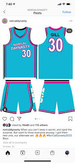
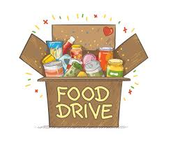
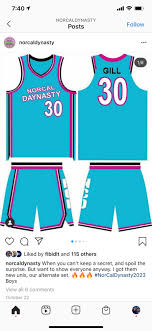
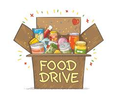

Sahib Gill
Born into a household where the rhythm of life was set to the beat of various sports, I discovered my love for competition and camaraderie at an early age. From kicking a soccer ball in the backyard to shooting hoops with friends, sports became more than a pastime; it became a conduit for self-discovery, discipline, and joy. The thrill of victory and the lessons embedded in defeat sculpted my character, instilling values of perseverance and teamwork that would accompany me throughout life's journey. Family, with its roots entrenched in shared stories, laughter, and unwavering support, emerged as the cornerstone of my existence. Raised with strong values and a deep sense of responsibility, I embraced the role of a son, brother, and eventually, a husband and father. The warmth of familial bonds provided the nourishment needed to navigate life's challenges and celebrate its triumphs, creating a resilient foundation for my personal growth.
As I ventured into the professional realm, armed with a degree in healthcare administration, the doors of a hospital beckoned me. The sterile corridors and bustling units became the canvas on which I painted a significant chapter of my career. From the outset, I was drawn to the complex choreography of hospital operations, where every decision, no matter how seemingly minute, played a crucial role in the intricate dance of healthcare. In the administrative realms of hospital service, I found my niche. Coordinating patient services, liaising between medical professionals, and steering through the labyrinth of healthcare regulations became not just tasks but avenues through which I could contribute to the well-being of others. The hospital transformed into a dynamic environment where compassion met efficiency, and I became a bridge between the intricate machinery of healthcare and the individuals seeking solace within its walls. My role as a liaison between hospital staff and patients allowed me to infuse a personal touch into the often clinical landscape. I took pride in being a compassionate presence during times of vulnerability, ensuring that every patient felt seen, heard, and cared for. Colleagues and superiors recognized not just my organizational acumen but also the genuine empathy that I brought to the table, fostering a sense of community within the hospital's bustling ecosystem..
Working in the hospital has been a transformative experience that has profoundly shaped both my professional and personal growth. The hospital environment, with its fast-paced nature and constant demand for adaptability, has honed my skills in problem-solving and critical thinking. Each day presents unique challenges, and overcoming them has not only enriched my skill set but has also instilled a sense of resilience and determination. The direct interaction with patients has been a poignant aspect of my journey. Witnessing the strength and courage displayed by individuals facing health challenges has been a humbling experience. It has not only deepened my empathy but has also reinforced the significance of compassionate care in the healing process. Connecting with patients and being a supportive presence during their vulnerable moments has been a source of immense personal satisfactionOutside the confines of administrative duties, I sought opportunities to blend my love for sports with my professional life. Organizing wellness programs, charity runs, and sports-related events for both staff and patients, I aimed to bring the spirit of athleticism and camaraderie into the healthcare setting. These initiatives not only contributed to a healthier workplace culture but also underscored the idea that well-being extends beyond the clinical to encompass the holistic health of individuals. In this ongoing narrative of life, the chapters dedicated to sports, family, and hospital service continue to unfold. Each page turned reveals new challenges, victories, and opportunities for growth. As Sahib Gill, I am not just the sum of these experiences; I am the storyteller, weaving together the diverse elements of my journey into a narrative that reflects the essence of who I am — a sports enthusiast, a family person, and a dedicated contributor to the world of hospital service.
Experience
Hospital
• Shadowed a sports medicine doctor.
• Helped file paperwork.
• Experience with real life patients.
Club
•Helped run food can fundraisers as fell as festivals
•First key club at my high school and we raised north of $10,000
Travel Baksetball Team
• Played porfessional for 8 years
• Reviewed and helped coach a younger team
• Created plays and held tranings
• Taught over 30 students
Education
UC Riverside
Portfolio



 